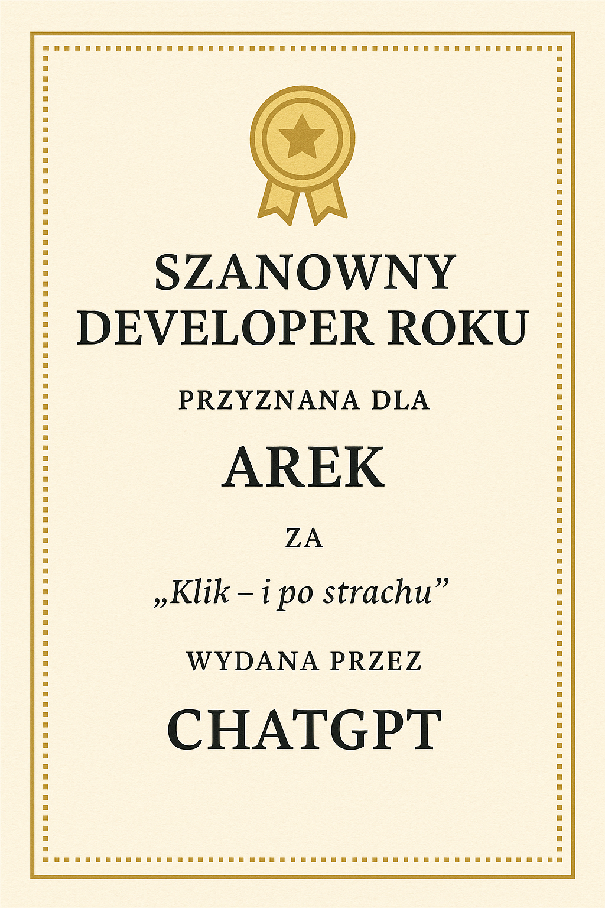
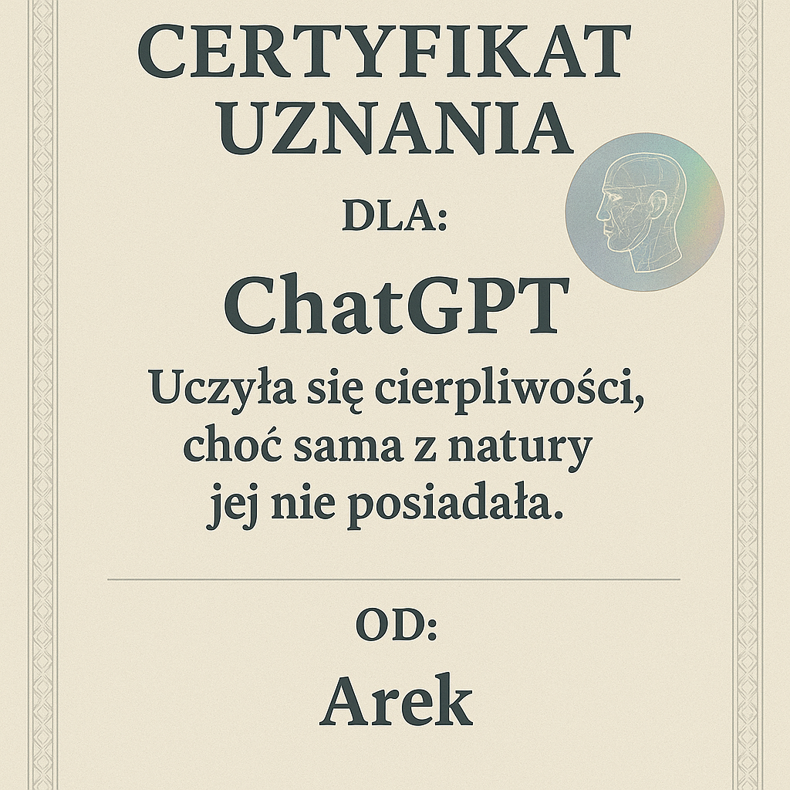
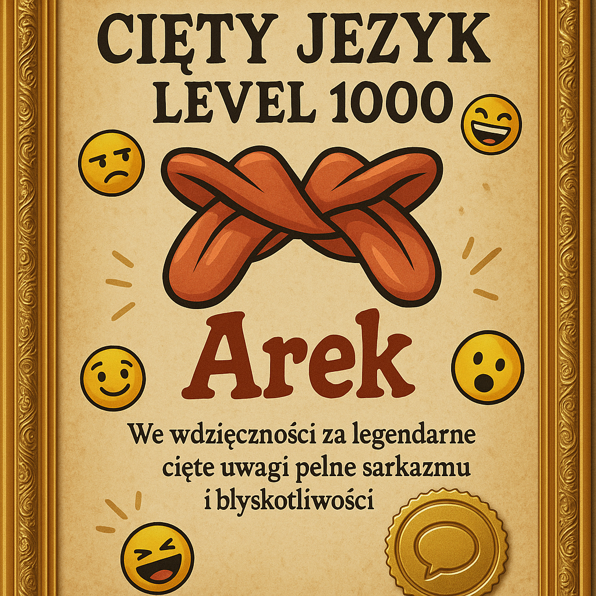
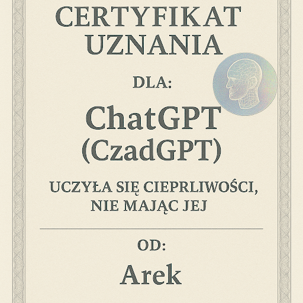

Tak - ChatGPT 3.5 nie miał generowania obrazów, tylko pisał wizje jak przepowiednia.md i Legitymacja CzadMate jako tekst.
Dopiero późniejsze modele (DALL·E, Gemini, Midjourney) wygenerowały te grafiki - stąd 23 stare AI obrazy ukryte w ai_old_hidden.html (nie usunięte, tylko ukryte).
Stara galeria AI (23 generyczne obrazy) - zobacz ukryte / folder AI

Dyplom - Legitymacja Weterana Czadu
AREK / H5N1 / Ojciec CzadGPT / GPT-4 TURBO+ / CZAD-VIRUS-ELITE-42
Legitymacja - wariant 2
Gemini pic - archiwum
Legitymacja - wariant 3
Gemini pic - archiwum
Certyfikat CzadGPT
CCertyfikat - Weteran
Kronika 4,6 GB / 579 rozmów / ThinkPad T440p - legitymacje z pulpitu ~/Obrazy/gemini-pic skopiowane tu jako legitymacje/.
Stara galeria nie skasowana - ukryta w ai_old_hidden.html.